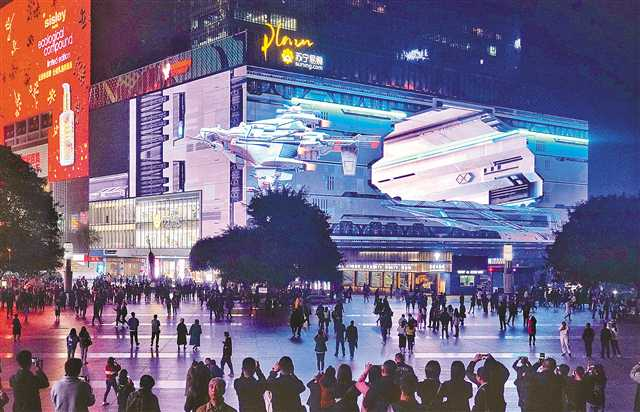
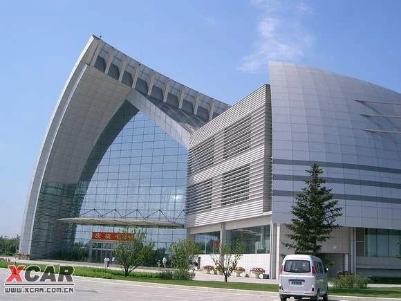
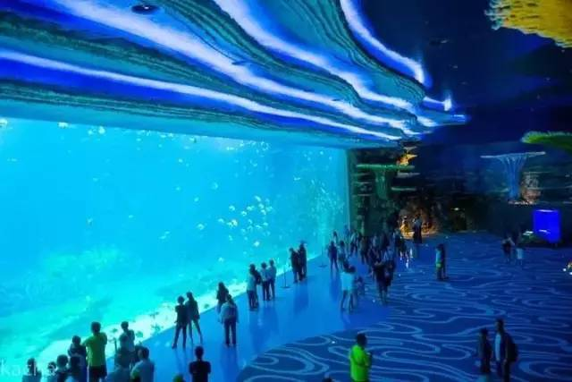

全国双拥模范城
江北区
隶属于重庆市，是重庆主城核心区之一。地处长
江嘉陵江两江之北，自西向东呈长条型带状分布。
1955年，重庆市区划调整，更名为江北区。江北
区下辖9个街道、3个镇，幅员面积为220.8平方千米。
截至2020年11月1日零时，江北区常住人口92.58万
第七次人口普查)。2021年，江北区地区生产总值
1507.1亿元按可比价计算增长8.5%，其中一、二、三
次产业实现增值1.2亿元、315.1亿元、1190.7亿元，
分别增长3.3%、7.6%、8.7%。三次产业结构比为
0.1:20.9:79
|  | 江北区观音桥位于重庆渝中半岛和北部地区的几何中心，是传统的商贸繁华区域，是重庆市人民政府确定的五大商圈之一，是江北区政治、经济、文化中心和交通枢纽。 观音桥商圈-以观音桥转盘为中心，建新东、南、西、北路为辐射方向，半径1000米内区域。该商圈作为北部城区商业发源地，凭借邻解放碑及新区优势，曾为上世纪90年代中期的第二大商圈，但随着交通改善，商业结构、布局不合理而出现“商业空心”现象，限制了一些大型。 |
|  | 重庆科技馆为重庆市委、市政府确定的全市十大社会文化事业基础设施重点工程之一，是面向公众的现代化、综合性、多功能的大型科普教育活动场馆，是实施“科教兴渝”战略和提高公民科学文化素养的基础科普设施。重庆科技馆位于长江与嘉陵江交汇处的重庆江北嘴中央商务区（CBD）核心区域，于2006年1月7日奠基，同年10月动工建设，2009年9月9日建成开馆。该馆占地面积37亩，建筑面积4.53万平方米（其中，展览教育面积为3万平方米），总投资额5.67亿元（其中，建安工程4亿元，展示工程1.67亿元）。 |
|  | 重庆海洋公园坐落于重庆江北欧式一条街最繁华地段，紧邻观音桥商业步行街，面对龙湖北城购物中心，背靠力帆洋河体育中心，四周遍布高档成熟社区。重庆海洋公园定位以高水平多功能海洋景观，海滨娱乐为特色，公园项目建设共分三期：一期已投资1亿多元，以休闲、水上娱乐为主的海滨风情园已于2001年向游客开放。此园规模宏大。面积达70000余平方米，其中惊险刺激的高台滑道、乘筏滑道、螺旋滑道、高速滑道以及6条并列布局的竞赛滑道为西部独有。 |